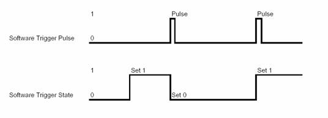

Software Trigger Control for Line-Scan Trigger
Parameter Set
Description
For the image trigger it is possible to use a software generated trigger signal to replace the external Trigger Input for the Image Trigger submodule.
The Software Trigger Control module, allows the user either to generate a software trigger pulse, or to set the state of the software trigger signal to generate a gate (e.g. for the Gated Image Trigger modes) . In the case of a dual applet an independant Software Trigger A and Software Trigger B for each port is available.

Please read the according chapter of the manual of your camera, which output format is used.
Parameters
Software Trigger State
To set the software trigger state you can choose between low (0) or high (1).
Software Trigger Pulse
A software trigger pulse can be sent under microDisplay, under the SDK, too.
References
| Forward |